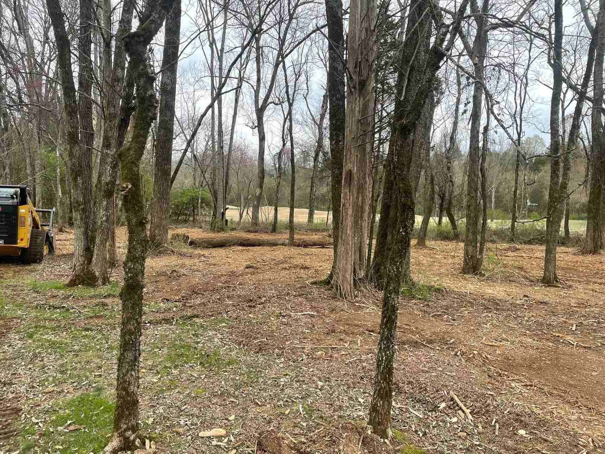

Are you looking for a way to reclaim overgrown land to improve its appearance or gain additional space for a future project? If so, land clearing is one of your options.
When considering the cost of professional land clearing, some property owners choose to remove overgrown vegetation and other obstacles themselves. The process might seem relatively straightforward, but expert services offer more benefits and savings than you may think.
What You Should Know About Land Clearing
Land clearing involves the removal of overgrown vegetation, trees, rocks, and other materials to prepare the area for different uses. This service is typically necessary for property development, major landscaping work, and agricultural projects. Many of these projects are difficult or impractical to complete without properly clearing and leveling the ground first.
The land clearing process often involves hand-held and commercial-grade equipment, like saws and bulldozers. The terrain, vegetation density, and project goals determine the most suitable tools and techniques.
Is DIY Land Clearing More Cost Effective?
Do-it-yourself land clearing might seem less expensive than professional services, but this isn’t always the case. You may have to rent or buy equipment, and the cost of grinders, skid steers, and other machinery can add up quickly for large-scale projects.
In addition to equipment expenses, DIY land clearing may involve the following:
- Hauling and disposal fees: Removing the waste you clear from your lot and disposing of it may require a dumpster rental.
- Machine maintenance: Whether you rent or buy equipment, you will be responsible for its fuel, if any is necessary, and its maintenance. Failing to maintain machinery can reduce its efficiency.
- Safety gear: Helmets, work gloves, harnesses, and safety glasses are essential for safety.
- Medical bills: Land clearing is dangerous. A lack of experience and training can lead to injuries.
Why Consider Professional Land Clearing Services?
Hiring a land clearing contractor is an expense, but it’s one that pays off. Qualified experts can provide the following:
Reliable Site Preparation for Other Projects
Whether you’re planning to build a home addition, enhance your landscape, or ready your lot for commercial construction, you have to prepare the land first. Trained professionals know how to ensure proper clearing for development.
They not only remove trees, dense brush, and other materials, but they also level the ground and implement drainage solutions. Crews also know how to treat the ground to prevent overgrowth from recurring due to invasive roots.
Access to Expert Services and Techniques
There’s more than one way to clear land. Professionals have the necessary expertise and access to heavy-duty machinery to handle any project. They undergo extensive training to operate equipment safely, plan projects efficiently, and provide the most appropriate services.
Suppose your property has rugged terrain and tree stumps with deep-set roots. In that case, the team working on your land may use a powerful excavator and attachments to navigate and remove the unwanted materials quickly and efficiently. Their ability to do so safely reduces the risk of injuries and delays.
Land clearing experts can also grade land. Land grading is the process of leveling or reshaping a property’s slope to encourage natural drainage and prepare the ground for foundation laying.
Forestry mulching is a common and cost-effective land clearing technique. Grinders eliminate overgrown vegetation by crushing the material into small pieces. Crews leave the mulch on the ground at the site for soil erosion control and to provide nutrients to the soil for other plants nearby, eliminating the need for hauling and waste disposal services.
Careful Consideration of Environmental Regulations
Do you know if your property is near a protected water source or contains protected wildlife? Experts have a deep understanding of local environmental regulations and ordinances.
You can be confident that their work on your land will comply with all relevant regulations to protect natural habitats, ecosystems, and water sources. Ignoring these regulations can result in penalties, fines, and project delays.
Enhanced Site Safety
Dead trees, hidden rocks, uneven terrain, and steep slopes are some of the potential hazards you could encounter while clearing your land. Thankfully, professionals are well versed in safety protocols. They know how to operate machinery, remove trees, inspect for hidden obstacles, and maintain a generally safe work site.
Enjoy the Benefits of Professional Land Clearing With The Yard Force
Hiring a land clearing contractor to tackle obstacles on your property offers benefits that DIY projects typically can’t achieve. With professional services, you can save time, stay safe, and have a property that’s ready for the next phase of upcoming construction, agricultural, and landscaping projects.
Are you ready to experience the benefits of expert land clearing solutions in or around Knoxville, Tennessee? The Yard Force is a full-service lawn care and landscaping company offering land clearing, tree removal, and brush removal services. Contact us today at (865) 290-8815 to request your free quote.